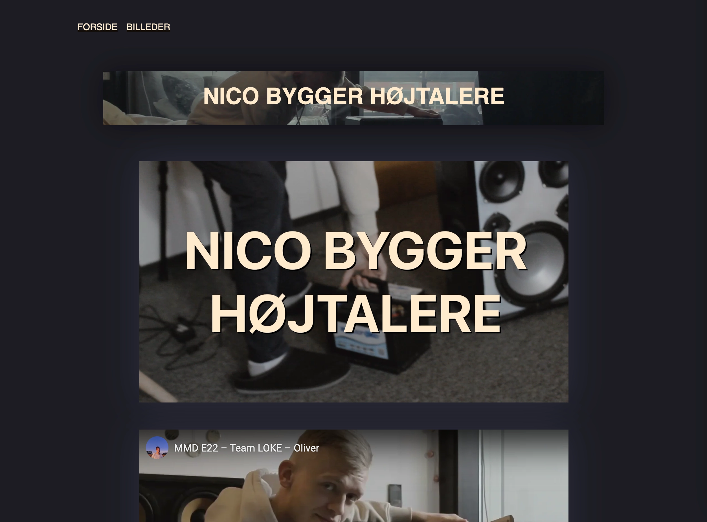

05.01.02 Pilotside
Formålet med pilotsitet var at lave en lille hjemmeside, der præsenterede en video.
Vi skulle være i stand til at linke til videoen på flere forskellige måder, både som et videoelement og som en iframe der linkede til videoen på YouTube.
Opgaven føltes mest af alt som en forberedelse til den næste aflevering, som var større og mere omfangende, så det var godt at få lidt mere styr på det inden.
05.01.02 Pilotside 